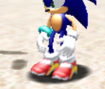
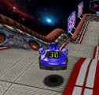
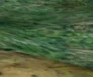

Sometimes I make mods for video games and such. This is where you can find them.
Usually it's a dumb Sonic game though, so uh- be prepared for that.
Sonic Adventure DX: Director's Cut Mods
BetterSADX
A project that essentially is a patch for the Steam version of Sonic Adventure DX: Director's Cut that allows you to turn it into the 2004 port, with many mods pre-installed. This project is a collaboratvie work, I just happen to be the one that started it. It's maintained by myself and Carlmundo, but the mods it's composed of are maintained by many many members of the community.
All of the following mods for Sonic Adventure DX: Diretor's Cut require you be running the 2004 port of the game with the SADX Mod Loader.
This comes packaged with BetterSADX by default, so if you have that you're good to go.
XInput Prompts
Changes a bunch of Keyboard Keys to Xbox 360 style buttons. It's well paired with SonicFreak94's Input Mod. The generic controller image used in game is a Logitech F310, which was chosen as the steam port used it as the icon for rumble in the options menu.
MetalSonic Sounds
A simple mod that properly restores the sounds for Metal Sonic in the game. For whatever reason every PC port of the game has broken sounds for Metal Sonic, sound is in ADX format as well.
Soap Shoes Sonic

An extremely basic texture mod I made to change the texture on Sonic's Shoes to be more like his SA2 Soaps. I did this as a joke at Danhanado who, in his tutorial on texture swapping didn't mention that the texture you're adding needs to map out in the same way, or else you'll end up with some funky looking shoes. I also winged it on adding his Light Speed Dash varient as well, and it turned out alright.
DLC Circuits

Replaces everyone but Sonic's Twinkle Circuit tracks with the Dreamcast DLC Courses, but only in the Sub Game Menu, so that you may play the courses without hacking. Scores do not save, no emblems can be collected this way. Those characters may access the standard Twinkle Circuit course though the adventure field normally.
Water Fixes

A mod loader version of Water Fixes by IndyTheGreat. I whipped it together because before it was done via direct file replacement. Ew. It corrects some poorly implemented water textures by editing the texture rather than by fixing the underlying issue. Functional, but not ideal.
Additionally here are some depreciated mods I'm just dumping here for archival purposes. You probably shouldn't use them, but you can if you want.
Sonic Adventure 2 Battle Mods
All of the following mods for Sonic Adventure 2 require you be running the game with the SA2 Mod Loader.
Restore Soap Shoes Adverts
A basic mod that replaces the generic Sonic Team posters and logos with the advertisments for Soap Shoes from the GameCube port. This was done for the purpose of making the game more authentic- SA2 always had Soap Shoes, Sonic still has Soap Shoes, City Escape should still be trying to sell me Soap Shoes.